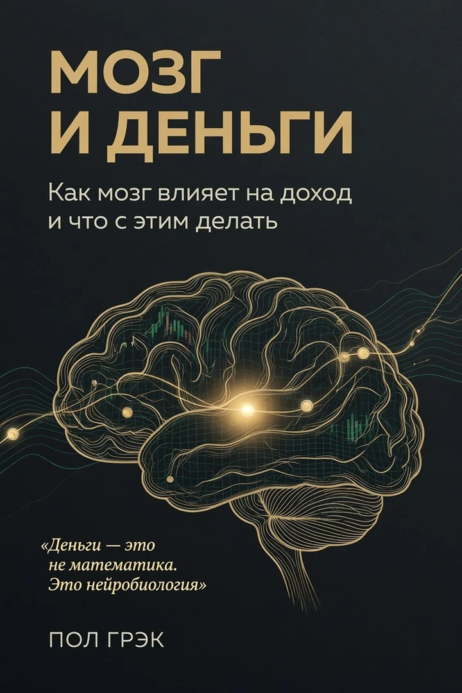

Мозг и деньги
Хороший доход — и нет накоплений
Как мозг мешает копить: шопинг, страх потерь, статус в кредит.

Серия «Мозг» · деньги
Как внешний порядок перестраивает мышление
Сначала бесплатная глава — потом покупка на Литрес.
Реклама · erid: 2VfnxyNkZrY · партнёрская ссылка Литрес
Оплата на Литрес. Здесь — описание и фрагмент; сайт не принимает платежи.
A — надёжные данные; B — хорошие исследования; C — ограниченные данные; D — наблюдения.
Для тех, кто читал Джиканди и ждал «сознания изобилия», а дебиторка осталась. Пол Грэк меняет последовательность: внешнее действие → деньги и системы → нейронная перестройка уверенности.
Поведенческая активация, DSO, скрипты, кейсы предпринимателей. Без «Вселенная подарит» — инженерный протокол, когда кортизол высокий, а «потока» нет.
«Сначала наведи порядок во внешнем — и «сознание» само станет яснее. Без аффирмаций вместо дебиторки.»
— Пол Грэк
Фрагмент из рукописи. Если стиль зайдёт — полный текст на Литрес.
Сначала деньги, потом сознание Как внешний порядок перестраивает мышление
Для тех, кто читал Джиканди
Если вы открыли «Счастливый карман, полный денег» и подумали: «Это про меня, я хочу так же», но годы спустя дебиторка не ушла, а «сознание изобилия» так и не пришло — эта книга для вас.
Джиканди описывает финишную прямую. Он прав: успешный человек чувствует себя уверенно, спокойно, изобильно. Но он ошибся в последовательности. Он предлагает достигать этого состояния через «внутреннюю работу». А мозг устроен иначе.
Эта книга — не опровержение. Это карта подъёма. Сначала расхлами операционку. Потом — если захотите — читайте Джиканди как десерт. Но скорее всего, когда деньги пойдут, метафизика уже не понадобится.
Введение
«Жизнь — это образы ума, выраженные вовне». — Дэвид Кэмерон Джиканди «Деньги — это эффект сознания, а не причина. Сначала измени внутреннее — и внешнее придёт само». — там же
А теперь мой контрапункт, который я выстрадал на собственной шкуре:
Сначала наведи порядок во внешнем — и тень (то самое «сознание») сама станет красивой.
Я, Пол Грэк, исследователь в области прикладной нейропсихологии. Но до того как я начал писать про нейропластичность и протоколы, я был классическим метафизиком-предпринимателем: аффирмации, «блоки», ожидание готовности.
А потом я сделал то, что Джиканди назвал бы «низковибрационным»: взял телефон и начал звонить должникам. Без аффирмаций. Без «я достоин». Просто скрипт, CRM и жёсткий дедлайн.
Через 45 дней собрал 310 000 рублей. Через 90 — вышел на 180 000 рублей чистыми в месяц. А потом случилось самое интересное: синдром самозванца исчез. Не потому, что я его «проработал». А потому, что внешний результат перестроил мозг.
Вот и вся формула этой книги:
Внешнее действие (операционка) → Внешний результат (деньги + системы) → Нейронная перестройка (уверенность + «состояние изобилия»)
Обратный порядок, который проповедует метафизическая индустрия, — красивая ложь о последовательности. Он описывает конечное состояние идеально. Но терапия — сначала «сознание», потом деньги — часто становится бегством от звонков и дебиторки.
Сначала деньги. Потом сознание.

Пол Грэк — научпоп о мозге без эзотерики. Уровни доказательности A–D, сначала проверка на себе.
Подборка

Хороший доход — и нет накоплений
Как мозг мешает копить: шопинг, страх потерь, статус в кредит.

Сохранить память и фокус надолго
Протокол когнитивного долголетия — с оценкой надёжности каждого совета.

Пробовали «прокачать» мозг и выгорели?
Честный гид: что реально работает — база и минимальная эффективная доза, без «волшебных» таблеток.